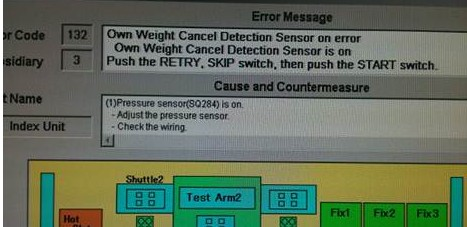
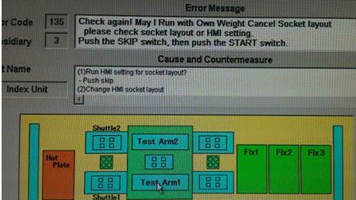
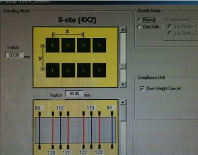
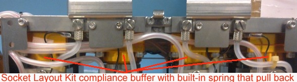
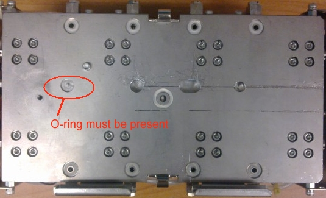
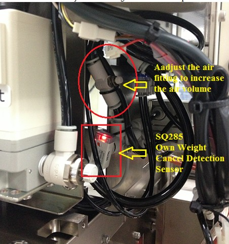

Service History
Subject: NS-8160W “Own weight cancel detection sensor error”
Handler Model: NS-8160W (S/N: 121476, H02-NS816) ASE
Controller: RC520 (S/N: 03-20263)
Date: 19 Jan 2012
Symptom
“Own weight cancel detection sensor error” display when they running the handler.
Error can be skip but another “Check again, May I run with own weight cancel socket layout” error will display.
2nd error can be skip and after that handler can resume proper operation.



Action
1) Check that Own Weight Cancel type Layout Kit is used(golden-brown cylinder)

2) Check O-ring is present on the Socket Layout Kit (SLK)

3)" Own weight cance"l is selected if the Own weight cancel SLK is used
4) Check Vacuum Pressure switch(Spring Hand Compliance sensor) SQ285 for Own Weight Cancel.

5) Air tubing is not pressed/bent eg. by cable tie.
Cause